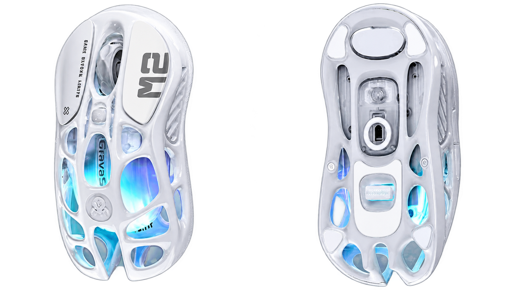
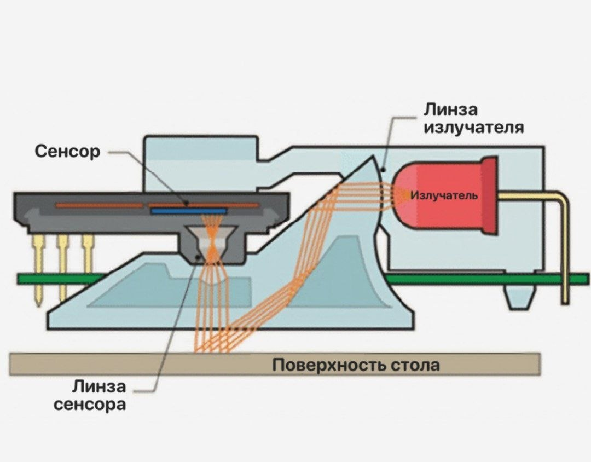
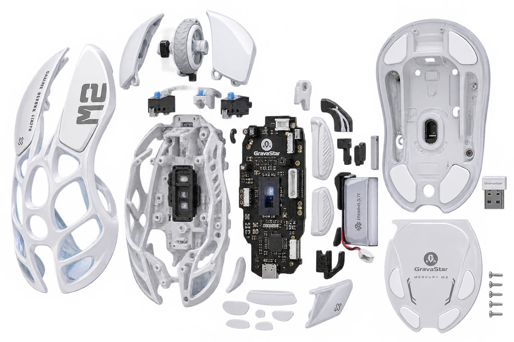

| GravaStar Mercury M2 имеет необычный полупрозрачный/полый корпус, через который видны внутренние элементы и RGB-подсветка. |  |
| Оптический сенсор постоянно делает большое количество маленьких снимков поверхности под мышью.Угол падения: Светодиод (LED) внутри мыши установлен под фиксированным, обычно довольно острым углом к поверхности (около 25–45 градусов). Это сделано намеренно, чтобы свет падал наклонно.В оптической компьютерной мыши угол падения света равен углу отражения (согласно классическому закону оптики), однако ключевую роль в её работе играет не зеркальное, а диффузное (рассеянное) отражение. |  |
В нижней части мыши находится оптический сенсор. Шаг 1 — освещение: Сенсор освещает поверхность под мышью. Шаг 2 — получение изображения: Микрокамера через оптическую систему получает изображение небольшого участка поверхности. Шаг 3 — сравнение кадров: Сенсор сравнивает последовательные изображения по изменению изображения вычисляется направление и скорость перемещения мыши. Шаг 4 — обработка: Полученные данные передаются в микроконтроллер.
| Характеристики | Значение |
| Сенсор | PixArt PAW3395 Optical |
| Максимальная частота опроса | 26 000 DPI |
| Максимальная скорость | 650 IPS |
| Частота опроса | 1000 Гц |
| Интервал опроса | 1 мс |
| Масса | 79 грамм |
| Размеры | 124 * 64,5 * 39,5 |
| Кнопки | 5 программируемых |
| Подключение | USB-C/Bluetooth 5.1/2,4 ГГц RGB GLOWSYNC |
| Форма | Симетрична |
| Тип корпуса | полый/скелетный |
| Аккамулятор | до 50 ч с RGB через 2,4 ГГц; до 82 ч через Bluetooth |
 |